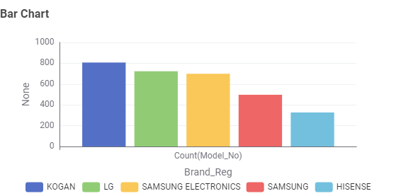
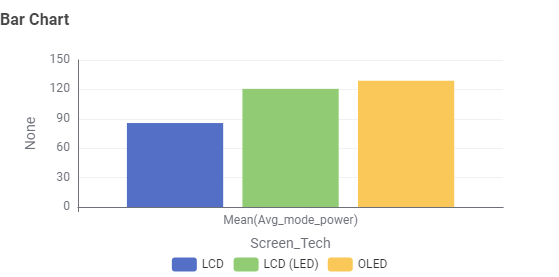
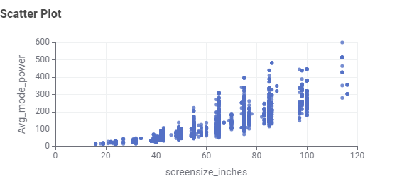
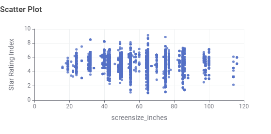
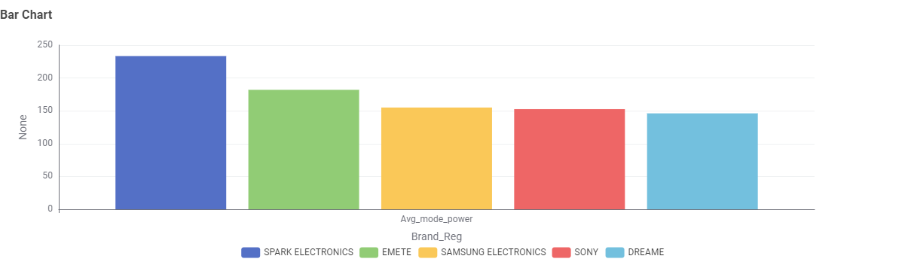

Television Energy Tips
Size & technology matter. Larger screens and older technology (e.g., plasma) use more energy. Modern LED/LCD and OLED sets are generally more efficient.
Who Is This Information For?
Discover useful information from an Australian Government television energy dataset. Explore TV technologies, screen sizes, brands and power consumption to better understand your options.
TV Buyers
People looking for a new television and comparing different options.
Energy Savers
Consumers who want to consider energy use when choosing a TV.
Everyday Users
Users who prefer simple visuals and easy-to-understand information.
Understanding TV Energy Use
Explore the charts below to discover key findings from an Australian Government dataset on television energy consumption. The data highlights patterns in technology, screen size, brands and power use.
Question 1: What types of TV screen technologies are currently available in Australia, and which are the most frequent?
LCD (LED) is the most frequent technology, followed by LCD and OLED.
Question 2: What screen sizes are available, and which are the most frequent?

Screen sizes range from 16" to 116", and 65" being the most common sizes.
Question 3: Which brands have the largest number of models?

Kogan has the greatest number of different models in the dataset.
Question 4: Which type of screen technology consumes the least amount of power?

LCD consumes the least amount of power, followed by LCD (LED) and then OLED.
Question 5: What is the relationship between screen size and power use?

There is a positive relationship between screen size and power use. Larger TVs tend to consume more power.
Question 6: What is the relationship between star rating and screen size?

There is a weak negative relationship between star rating and screen size. This means larger TVs do not always receive higher ratings.
Question 7: Are there differences in power consumption between brands?

Power consumption varies between brands. Spark Electronics has the highest, while Dreame has the lowest. Some brands also show a wider range between models.
Making a Smarter TV Choice
Choosing a TV involves considering its size, brand and energy use. A 55-inch LED TV is a common choice and can offer a good balance between screen size and energy efficiency.